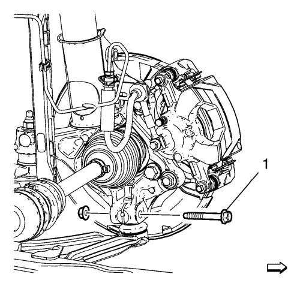
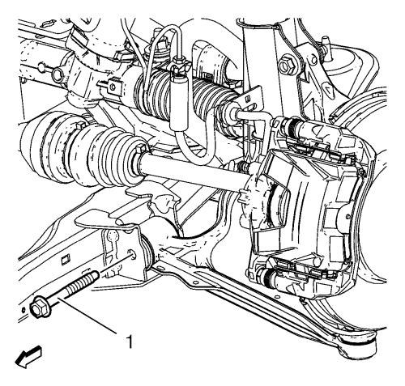
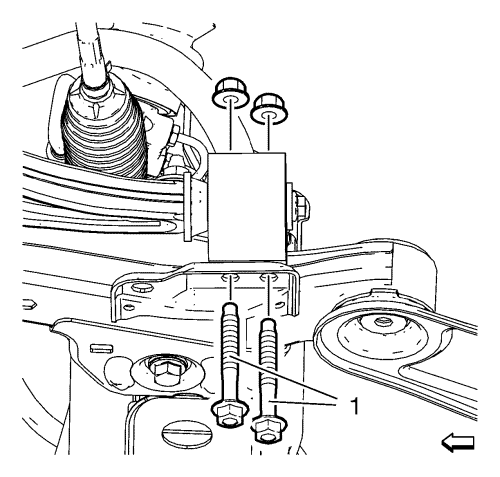
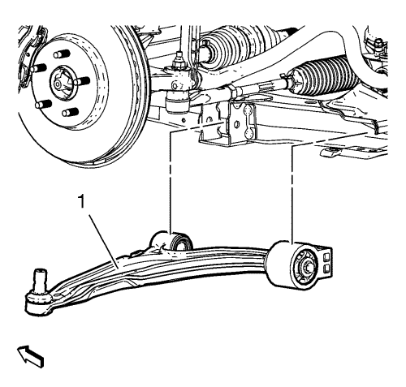

Sustitución del brazo de apoyo inferior
Herramientas especiales
EN-45059 Kit de goniómetro de par de apriete
Si desea informarse sobre herramientas regionales equivalentes, consultar Herramientas especiales .
Procedimiento de desmontaje
- Elevar el vehículo y soportarlo de manera segura. Consultar Elevación y soporte en alto del vehículo .
- Desmonte el neumático y la rueda. Consultar Desmontaje y montaje de la rueda y el neumático .
Nota: NO reutilice las tuercas y tornillos del brazo de apoyo inferior Deseche y utilice SÓLO uno nuevo.
- Desmonte el mazo de cables del sensor de la velocidad de la rueda del brazo de apoyo y la mangueta.

- Desmonte y DESECHE el perno y la tuerca de la rótula inferior de la mangueta (1).
- Separe el brazo de apoyo de la mangueta.

- Desmonte y DESECHE el perno y la tuerca del brazo de apoyo inferior delantero (1).

- Desmonte y DESECHE los pernos y tuercas del casquillo del brazo de apoyo inferior trasero (1).

- Retire del bastidor frontal el brazo de apoyo inferior (1).
Procedimiento de montaje
- Coloque el brazo de apoyo inferior (1) en el subchasis.
- Monte y apriete a mano los NUEVOS pernos y tuercas del casquillo del brazo de apoyo inferior trasero (1).
- Monte y apriete a mano el NUEVO perno y la NUEVA tuerca del brazo de apoyo inferior delantero (1).
Precaución:Consulte Precaución con las fijaciones en la sección Prólogo.
- Sostenga el brazo de apoyo inferior con un gato hidráulico y levante el brazo de apoyo hasta la posición de punto muerto.
- Apriete el perno del brazo de apoyo inferior delantero (1) a 70 N·m (52 lib. pie) +75-90 grados , mediante el juego EN-45059.
- Apriete el casquillo trasero a los pernos del bastidor a 55 N·m (41 lib. pie) +45-60 grados , mediante el kitEN-45059.
- Monte la NUEVA rótula inferior del perno y la tuerca de la mangueta y apriétela a 30 N·m (22 lib. pie) +60-75 grados mediante el kitEN-45059.
Deposite el vehículo en el suelo para apretar las sujeciones del brazo de apoyo correctamente.
- Retire el soporte del gato.
- Monte el neumático y la rueda. Consultar Desmontaje y montaje de la rueda y el neumático .
- Bajar el vehículo.
| © Copyright Chevrolet. Reservados todos los derechos |